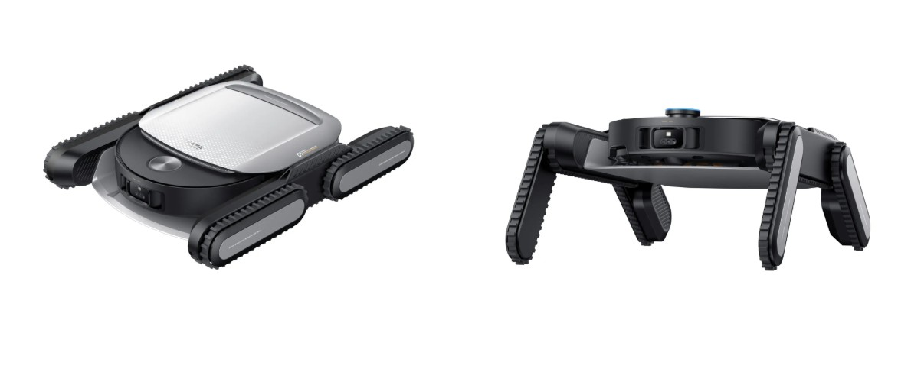
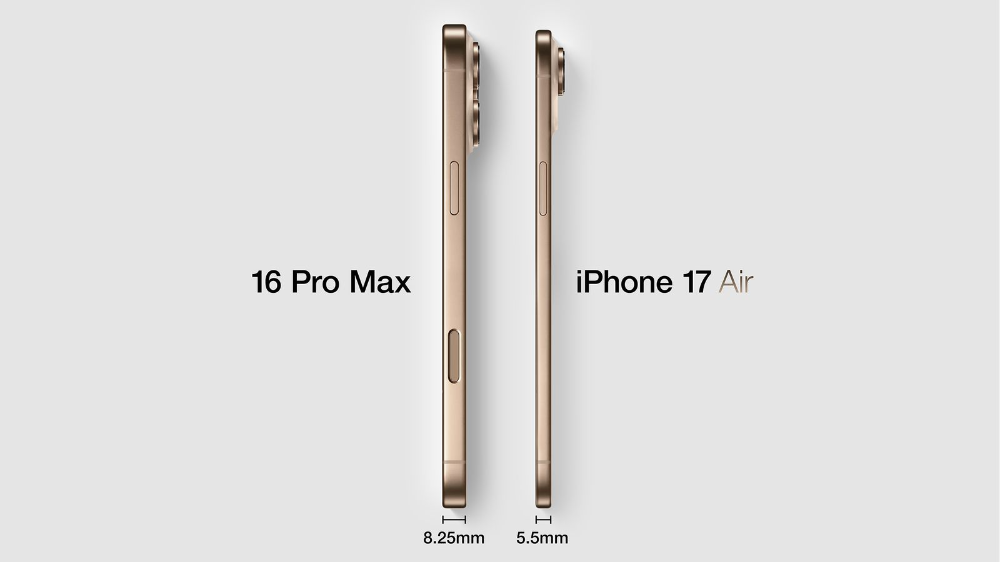
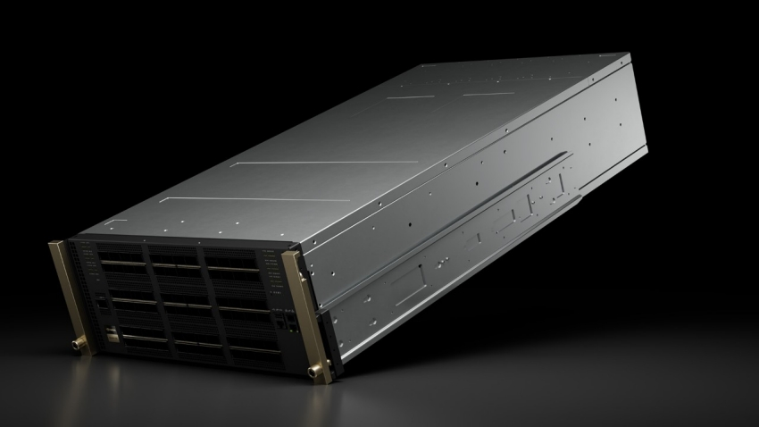
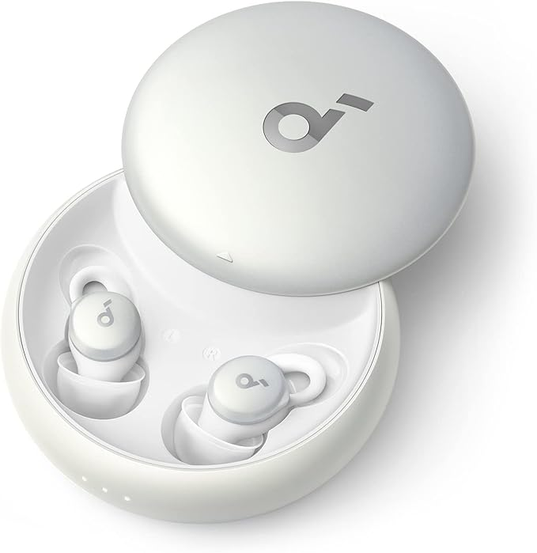
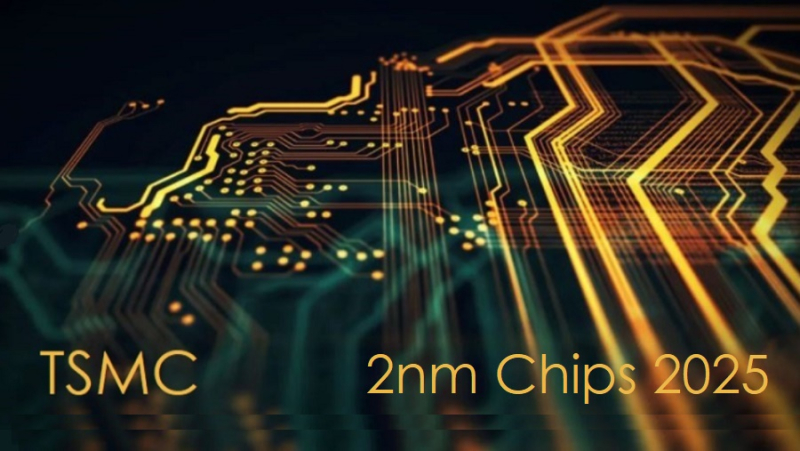

🔍 Introducción
La primera semana de septiembre nos dejó una avalancha de novedades tecnológicas que redefinen cómo vivimos, descansamos y nos conectamos. Desde robots que limpian en 3D hasta supercomputadoras cuánticas, pasando por auriculares que mejoran el sueño y filtraciones del nuevo iPhone 17 Air. Aquí te presentamos lo más relevante, con un enfoque claro, visual y directo.
🚀 IFA Berlín 2025
- Dreame Cyber X: Robot aspirador que sube escaleras.
- Dreame Cyber 10 Ultra: Limpieza 3D con brazo robótico.
- IA en piscinas: Limpieza adaptativa inteligente.
“La limpieza del hogar está entrando en una nueva era: autónoma, inteligente y casi cinematográfica.”
🍏 Apple Event
- iPhone 17 Air: Más ligero, sin modelo Plus.
- Apple Intelligence: IA integrada en todos los dispositivos.
- Vision Pro: Realidad aumentada mejorada.
“Apple no solo lanza productos, redefine cómo interactuamos con la tecnología.”
🧬 QuantumX de NVIDIA
- Supercomputadora con arquitectura cuántica.
- Entrena modelos de lenguaje y simula sistemas complejos.
“QuantumX no es solo hardware, es el nuevo cerebro de la inteligencia artificial.”
🎧 Auriculares para dormir
- Diseño ultradelgado y cómodo.
- Cancelación de ruido optimizada para el descanso.
- Alarmas por vibración y sonido direccional.
“Dormir bien también es una experiencia tecnológica.”
📈 Chips e IA
- TSMC proyecta $42 mil millones en inversión.
- Demanda impulsada por Apple y NVIDIA.
- Riesgos geopolíticos y burbuja tecnológica.
🧠 Meta y moderación
- Notas comunitarias para moderar contenido.
- Menor censura, mayor contexto colaborativo.